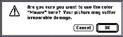

|
|
Caution Alert BoxesThe caution alert box is the second level of alert box. It is a more severe alert than the note alert box. The caution alert box icon is the triangle with an exclamation point. Caution alert boxes warn the user in advance of a potentially dangerous action. This kind of feedback provides a safety net for users. Caution alert boxes always contain two buttons, an OK or Continue button and a Cancel button. The caution alert box allows the user to continue the potentially dangerous action or to cancel the action and do something else. The OK or Continue button should be the default button, unless the user has to perform some other task in order to prevent the loss of data. Figure 6-19 shows an example of a caution alert box.Figure 6-19 An example of a caution alert box  Use a caution alert box to warn users whenever they are about to complete an action that causes irretrievable data loss or any other potentially dangerous situation. |